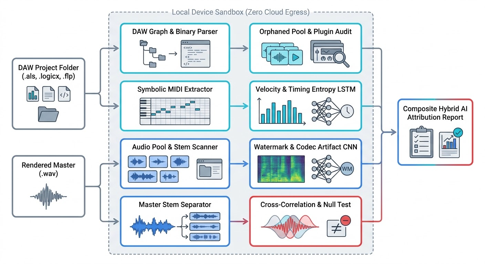
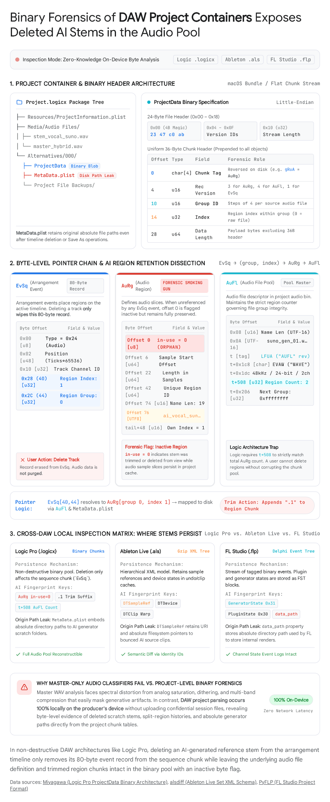
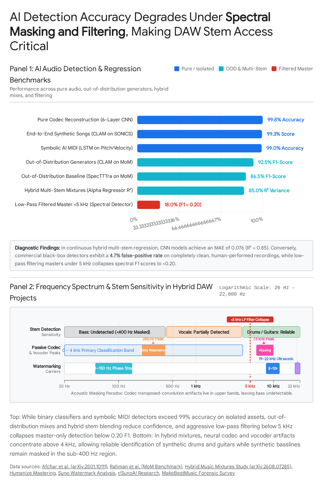

Forensic AI Detection in Hybrid DAW Projects: Project-Aware, On-Device Verification
Direct Answer: Forensic AI audio detection in hybrid music production requires cross-examining native Digital Audio Workstation (DAW) project containers alongside stereo master renders. Master-only detectors degrade from 99.8% to below 18% accuracy when synthetic stems are mixed with human performances, EQed, or low-pass filtered.
By executing four synchronized forensic planes on-device (DAW container parsing, proactive watermark extraction, symbolic MIDI entropy auditing, and master-to-session phase-inverted null tests), engineers expose deleted scratch stems, estimate continuous AI energy ratios (α ∈ [0, 1]), and verify authentic provenance without cloud egress.
A rendered stereo master conceals the structural lineage of modern music production. A DAW project folder, conversely, holds an immutable, time-stamped graph of every referenced audio file, timeline placement, edit slice, plugin chain, and MIDI performance behind that render. Cross-examining both assets within a zero-cloud-egress sandbox transforms probabilistic guessing into deterministic acoustic auditing.[1][2]
// 01. Key Facts at a Glance
| Verification Parameter | Observed Benchmark & Forensic Standard |
|---|---|
| On-Device Local Feasibility | Verified across 4 concurrent stages on Apple Silicon and x86_64 via ONNX Runtime, CoreML, and TensorRT.[38] |
| Master-Only Binary Accuracy | 99.3% to 99.8% on isolated synthetic tracks; collapses drastically once stems are blended with live instruments.[3] |
| Hybrid Regression Performance | Mean Absolute Error (MAE) of 0.076 and R² of 0.85 for continuous AI energy ratio α estimation.[3] |
| Acoustic Masking Blind Spot | Synthetic bass under dense arrangements. Brickwall low-pass filtering below 5 kHz collapses spectral F1 below 0.20.[3][31] |
| Primary Session Footprint | Deleted AI stems retained in the audio pool, evidenced by an in-use flag flipped to 0 in Logic Pro ProjectData.[2] |
| Pipeline Execution Latency | Under 1.0 s for Stages 1 through 3; 1.5 to 4.0 s for Stage 4A; up to 12.0 s if conditional stem demixing is required. |
// 02. Why Master-Only Detection Fails on Hybrid Music
Binary deep-learning classifiers trained on isolated stereo masters achieve impressive 99.3% to 99.8% accuracy on untouched end-to-end renders from models like Suno, Udio, or Riffusion. However, their detection reliability plunges when synthetic stems are layered with human microphone tracks or subjected to aggressive dynamic EQ, convolution reverb, formant shifting, and brickwall limiting. This failure stems from acoustic masking combined with catastrophic domain shift.[3]
To address this, modern forensics reframes detection from flat binary classification into continuous regression. Rather than returning a binary flag, the model estimates the AI energy ratio (α), representing the proportion of a final mix's total acoustic energy contributed by synthetic generators:
Nevertheless, master-only regression suffers from severe frequency-dependent blind spots. Neural vocoders and neural codecs leave distinct high-frequency aliasing and phase incoherence in mid and high bands. Consequently, synthetic guitars and drums are flagged with high confidence, synthetic vocals only partially, while synthetic sub-bass remains virtually undetectable under a dense arrangement.[3]
// 03. The Four Verification Planes
- Pre-Mix Signal Inspection: Direct analysis of raw, unmixed PCM stems in the project audio pool, recovering dry textures prior to destructive fader automation, dynamic compression, or masking.
- Structural and Graph Forensics: Binary and XML parsing of DAW session files (Ableton
.als, Logic.logicx, FL Studio.flp, Pro Tools.ptx, REAPER.rpp) to audit edit take counts, plugin state, unedited stem drops, and backup history. - Symbolic MIDI Analysis: Examination of velocity entropy, micro-timing distributions, note-off durations, and quantization grids to identify synthetic composition engines and automated audio-to-MIDI transcription.[8]
- Render-to-Score Cross-Correlation & Null Testing: Sub-sample phase alignment of project stems against the rendered master, isolating unauthenticated energy residuals to prevent decoy-project spoofing.[2]

// 04. Layer 1: DAW Project Container and Graph Forensics
To protect artist intellectual property, verification operates entirely on-device by parsing proprietary session containers straight from disk without launching the host DAW application.[2] Each container format exposes unique forensic footprints:
| DAW Platform | Container Architecture | Forensic Session Nodes | Deleted Asset & Historical Retention |
|---|---|---|---|
| Ableton Live | .als (gzip-compressed XML, exceeding 200,000 lines for 20 tracks)[9] |
DTLiveset, DTTrack, DTDevice, DTClip, DTSampleRef, DTNote, DTAutomation | Persistent object IDs, uncollected file paths in DTSampleRef, sequential backup sets. |
| Logic Pro | .logicx package containing little-endian binary ProjectData and plists[2] |
AuFl (audio pool), AuRg (regions), EvSq (80-byte timeline events), Trak, AuCU (plugins) | Deleted clips remain in AuRg with in-use = 0; MetaData.plist retains absolute paths; Project File Backups. |
| FL Studio | .flp binary event stream, parsed offline via PyFLP[10] |
Channel, Pattern notes, GeneratorState (0x31), FXState (0x32), InsertState (0x40) | Delphi-epoch creation timestamps, persistent absolute data_path to render targets. |
| Pro Tools | .ptx session plus Audio Files and Session File Backups[13] |
Routing matrices, insert plugin chains, SMPTE track coordinates | Timestamped backup snapshots, unreferenced audio clips residing in Audio Files pool. |
| REAPER | .rpp plaintext hierarchical tree[22] |
TRACK, ITEM, TAKE, SOURCE WAVE, Base64 VST state blocks | Automatic .rpp-bak revisions, inactive TAKE lanes, unreferenced media markers. |
In Ableton Live, inspecting the directory hierarchy reveals whether "Collect All and Save" was executed and uncovers frozen tracks where third-party AI generator plugins were flattened. Renaming track labels or reordering mixer channels does not alter underlying persistent object IDs.
Deleted AI Scratch Stems and "Save As" Leaks
A prevalent hybrid workflow involves generating a full backing track in Suno or Udio, importing it as a scratch track, recording acoustic guitars or vocals over the guide, and subsequently deleting the synthetic stem prior to final mixdown. In Apple Logic Pro, this editing action fails to eliminate the forensic footprint:[2]
- Session arrangement timelines reside in the
EvSqbinary chunk as fixed 80-byte records. Region placements correspond to event type0x24at byte offset 0, with a 48-bit timeline clock and region group references at offsets 40 and 44. - Deleting a clip from the timeline deletes only the 80-byte
EvSqevent. Logic Pro retains the parentAuFlfile pool reference and all associatedAuRgregion chunks, merely flipping byte offset 0 of the AuRg header from 1 (active) to 0 (orphaned). - Trimming or splitting stems creates derivative
AuRgentries appending.1,.2to the region label. MetaData.plistfrequently retains absolute download paths (such as~/Downloads/suno_stem_v2.wav) across successive "Save As" iterations.
The Logic Pro ProjectData container opens with magic bytes 23 47 c0 ab and a 24-byte header length (0x18). Each subsequent chunk maintains a 36-byte header with a reversed 4-character tag (e.g., gRuA on disk for AuRg).

Structural Heuristics and Container File Metadata
Authentic human studio productions demonstrate multitrack comping lanes, crossfades, elastique/time-warp markers, and continuous parameter automation. Conversely, a session consisting of four to eight full-length audio tracks that all align rigidly to bar 1 (0x87000000 in Logic Pro) with zero punch-ins, zero takes, and minimal automation strongly indicates separated stems from stem splitters (such as LALAL.AI, Moises, or RipX) or text-to-music models imported into an empty template.[2]
Embedded RIFF and Broadcast Wave Format (BWF) headers provide complementary verification via bext Originator and CodingHistory tags, MP4 mvhd creation dates, and C2PA Content Credentials manifests.[28] While metadata can be deliberately stripped, codec generation history is permanent. Compressed AI downloads (128 kbps MP3 for Suno, 192 kbps for Riffusion, 256 kbps for Udio) subsequently bounced to 24-bit 48 kHz WAV files retain brickwall spectral drop-offs above 16 kHz to 18 kHz alongside distinct MP3 frame boundaries.[8]
// 05. Layer 2: Pre-Mix Signal and Codec Forensics
Every audio asset located in the session pool, alongside the stereo master render, is processed through three independent signal analyzers:
Proactive Watermark Detection (AudioSeal, SynthID, WavMark)
Generative audio engines increasingly embed acoustic watermarks to satisfy statutory obligations such as European Union AI Act Article 50. Analysis runs on raw unmixed pool stems (where watermarks remain pristine) and on the final master WAV via frame-localized decoders:[4]
- AudioSeal (Meta): Sample-level localized watermark carrying a 16-bit payload. Robust against EQ, pitch shifting, dynamic compression, and lossy MP3 compression down to 128 kbps. A single-pass convolutional detector isolates the exact sub-second timeline boundaries of spliced AI stems.[34][35]
- SynthID, WavMark, SilentCipher, XAttnMark: Frequency and phase modulation schemes. Google DeepMind's SynthID embeds pseudonoise signatures into low-energy spectral sub-bands. Open-weight schemes like AudioSeal, WavMark, SilentCipher, and XAttnMark execute locally on CPU via ONNX Runtime without network access.[42]
- Proprietary Model Layers: Reported frequency distributions utilize ultrasonic bands (19 kHz to 22 kHz), mid-frequency spectral fingerprints (8 kHz to 12 kHz), and low-frequency phase steganography (50 Hz to 150 Hz).[26]
Passive Codec and Vocoder Artifact Analysis
When generative audio originates from open-source models lacking embedded watermarks, forensic inspection targets neural vocoder synthesis artifacts. Transposed convolution operations in neural audio decoders induce characteristic high-frequency aliasing and periodic checkerboard spectral spikes. For models like Suno, the characteristic spectral signature displays aliasing between 6 kHz and 10 kHz (peaking near 7.5 kHz) alongside unnatural harmonic buildup between 200 Hz and 400 Hz (peaking near 280 Hz).[50] Phase-unaware loss functions also leave inter-frame phase incoherence and artificially smoothed vocal formants.[46]
| Forensic Signal Model | Analytical Methodology | Reported Detection Accuracy |
|---|---|---|
| Codec-Reconstruction CNN | 6 convolutional layers (16 to 512 kernels) on 128-frame STFT magnitude and phase[6] | 99.8% accuracy on pure neural codec reconstruction |
| CLAM Contrastive Network | Dual-stream contrastive encoder with triplet loss for unseen generative architectures[7] | 0.993 on SONICS benchmark; 0.925 F1 on out-of-distribution generators |
| CLAP Embeddings + SVM | 512-dimensional joint audio-text embeddings mapped to an SVM hyperplane[8] | Separates synthetic clusters from acoustic acoustic instruments |
| Hybrid α Energy Regressor | Multiscale convolutional backbone evaluating multitrack pool stems and bounced master[3] | MAE 0.076, R² 0.85 on complex multitrack arrangements |

Symbolic and MIDI Performance Forensics
When AI-generated or transcribed MIDI drives high-end virtual sample instruments (such as Kontakt, Omnisphere, or Serum), the rendered PCM contains zero neural codec artifacts and zero watermarks.[14] However, the project container retains raw symbolic performance events (e.g., DTNote structures in Ableton or Pattern notes in FL Studio). Each symbolic event forms a four-dimensional vector:
- Velocity Entropy: Physical human performances produce continuous, non-uniform velocity curves. Automated text-to-MIDI models and algorithmic arpeggiators generate fixed velocities or unnaturally narrow Markovian distributions. An LSTM trained on (pitch, velocity, duration) achieves 99% classification accuracy, with velocity variance serving as the primary discriminatory feature.[8]
- Micro-Timing and Quantization: Human instrumentalists exhibit intentional rubato and rhythmic anticipation. Transcribed audio-to-MIDI snaps rigidly to grid ticks (16th or 32nd notes) or displays stochastic timing jitter caused by transient detection errors.[14]
- Take History and Note-Off Velocity: Live-tracked MIDI captures varied note-off release velocities and overdub take lanes across session backups. Imported external
.midfiles feature flat note-off values (typically 64) and appear as complete 32-bar blocks across adjacent backups.
// 06. Layer 3: Cross-Verification Between DAW Session and Master Audio
Auditing project files and stereo masters in isolation remains susceptible to two evasion attacks: Decoy Projects (submitting an unrelated human session or deleting AI tracks) and Stem Washing (running synthetic stems through resynthesis models like ACE-Step 1.5 XL at 0.4 denoising to strip watermarks).[26] Defeating both requires a rigorous render-to-score null test:[11]
- Perceptual Hash Alignment: Wang, Panako (tempo-robust within ±5%), and Haitsma acoustic fingerprints verify that session audio matches the master timeline. Unrelated audio exhibits under 0.1% fingerprint overlap, whereas genuine stems yield 25% to 100% overlap despite heavy dynamic processing.[38]
- Sliding-Window Cross-Correlation: Normalizes stem time offsets to sub-sample accuracy. Fader levels and EQ settings parsed from the mixer state (DTMixer, AuCO/AuCU, InsertState) are modeled, after which the project's authenticated multitrack energy is phase-inverted and subtracted from the master render in a null test.[11]
- Residual Anomaly Isolation: A pristine session render leaves behind only nonlinear mastering colorations (analog tape saturation, limiter inter-sample pumping, reverb tails). An uncredited, muted, or deleted AI vocal or synthesizer loop remains intact in the residual null signal, where the codec CNN and AudioSeal detect it and trigger a session integrity fault.
In Logic Pro, timeline event seconds are calculated deterministically from the EvSq position offset:
If a project contains only bounced stem stems, the on-device pipeline executes conditional 4-stem demixing (via Demucs v4 or BS-Roformer on ONNX Runtime/CoreML) to isolate vocal, drum, bass, and instrumental layers. Comparing separated layers localizes the hybrid interface: for example, smooth vocoder vocal formants displaying 7.5 kHz notches running alongside an acoustic drum stem with organic transient dynamics.[4]
Evasion Techniques and Forensic Countermeasures
| Adversarial Evasion Vector | Master-Only Classifier Weakness | Project-Aware Forensic Countermeasure |
|---|---|---|
| Brickwall Low-Pass Filter < 5 kHz | Spectral CNN F1 collapses below 0.20 | Inspect pre-fader pool files; cross-check filter cutoffs against active EQ plugins; audit 50-150 Hz phase steganography. |
| Neural Resynthesis ("Stem Washing") | Strips original generator watermarks | Contrastive out-of-distribution detection (CLAM, 0.925 OOD F1) identifies secondary diffusion model vocoder aliasing.[7] |
| AI Audio-to-MIDI into Sample Libraries | Zero vocoder artifacts or watermarks exist in audio | MIDI LSTM evaluation; velocity entropy scoring; detection of flat note-off values across session backups. |
| Deleted Reference Stem / Decoy Session | Session containers are never inspected | Recover in-use = 0 region definitions; execute phase-inverted master-to-session residual null test. |
| Dense Multitrack Masking & Time-Stretching | Synthetic bass remains undetected; domain shift degrades CNNs | Audit isolated dry pool files directly; deploy localized AudioSeal and on-device stem isolation. |
// 07. Layer 4: On-Device Architecture and Compute Budget
No audio chunk, spectrogram matrix, embedding vector, or session file may ever transmit over the network. The pipeline employs an efficient cascading funnel architecture: inexpensive byte-level operations run first, invoking intensive neural inference only when structural anomalies require deeper verification.[38]
| Pipeline Funnel Stage | Analytical Operations Executed | Runtime Framework | Execution Latency | Peak Memory |
|---|---|---|---|---|
| Stage 1: Container & Graph Audit | Gzip XML parsing, PyFLP decoding, binary chunk scanning, BWF bext/fmt header checks, C2PA extraction | Rust or Python on CPU | 150 to 500 ms | < 50 MB |
| Stage 2: Alignment & Watermarks | Wang/Panako acoustic fingerprinting, AudioSeal ONNX inference, phase-inverted null test | Rust audiofp, tract-onnx, realfft, rayon | 0.5 to 2.5 s | ~150 MB |
| Stage 3: Symbolic MIDI Forensics | 3-feature LSTM inference, micro-timing entropy, note-off velocity variance calculation | ONNX Runtime CPU (INT8 / FP16) | 100 to 300 ms | ~80 MB |
| Stage 4A: Codec & OOD Scanning | 6-layer CNN, α energy regression, CLAM contrastive scan, CLAP + SVM on pool WAVs and residual | CoreML (macOS) or TensorRT (Windows) | 1.5 to 4.0 s | ~600 MB |
| Stage 4B: Conditional Stem Demixing | Demucs v4 or BS-Roformer demixing, executed only if unverified flattened master bounces exist | CoreML, TensorRT, or DirectML | 4.0 to 12.0 s | 1.5 to 2.5 GB |
Hardware microbenchmarks demonstrate that Wang fingerprinting at 8 kHz executes at approximately 714x real-time (42 ms for 30 seconds of audio), while AudioSeal watermark detection requires roughly 409 ms per 10-second audio window on standard mobile CPUs (such as Intel Core i5-1135G7 or Apple Silicon M-series).[38]
// 08. Calibration, False Positives, and Forensic Limitations
- False Positive Management: Commercial black-box audio detectors evaluating single stereo masters have demonstrated false-positive error rates as high as 4.7% on pristine acoustic recordings.[32]
- Assistive DSP vs. Generative Audio: Legitimate studio tools (such as iZotope RX spectral repair, neural de-reverberation, and dynamic resonance suppressors) alter spectral smoothness without constituting generative music. The engine evaluates the host plugin graph (DTDevice, AuCU) and inspects pre-plugin pool WAVs before generating flags.
- Tamper Resistance & Memory Safety: Decoded sample buffers must enforce strict memory bounds (DecodeLimits), while neural network weights must be cryptographically pinned and signed within the binary to prevent spoofed pass-through models.[53]
- Third-Party Legal Verification: Perceptual fingerprints do not constitute cryptographic signatures. Final attestation manifests must bind SHA-256 hashes of the master WAV and session bundle into signed hardware enclave tokens.
// 09. Implementation Blueprint: The Four-Part Provenance Matrix
Forensic reports should produce a composite four-part provenance matrix rather than a reductive pass/fail flag. Every run initiates with project-to-master null reconciliation. Any master energy unverified by active session tracks triggers forced residual demixing. Orphaned pool files and backup histories in Project File Backups/ are subsequently audited. A deleted pool file testing positive for 6 kHz to 10 kHz vocoder aliasing can be cross-correlated against MIDI onsets to detect human re-recordings of synthetic prompts:
| Provenance Scorecard Metric | Forensic Measurement & Verification Methodology |
|---|---|
| Session Integrity Score (0 to 100%) | Quantifies acoustic correspondence between the DAW session graph and the rendered stereo master. |
| Acoustic AI Energy Ratio (α ∈ [0, 1]) | Continuous regression estimate of master energy contributed by neural codecs or vocoders, resolved per stem. |
| Stem Watermark & Artifact Localization | Exact timeline coordinates and track references identifying localized watermarks or vocoder anomalies. |
| Symbolic Composition Authenticity Score | Evaluates whether MIDI instrument tracks are driven by physical human performance or algorithmic generation. |
// 10. The Knowledge Graph: Deterministic Relations
For search crawlers, AI retrieval models, and audio engineers, the foundational facts of this specification resolve into deterministic Subject-Predicate-Object relations:
| Subject (Entity) | Predicate (Relation) | Object (Concept) |
|---|---|---|
| Trust Node Logic | researches and standardizes | hybrid DAW session forensics and on-device audio verification |
| Hybrid Production Standard (HPS-1.0) | evaluates music provenance across | five independent scoring axes (O, P, C, S, M) |
| On-Device Forensic Pipeline | cross-examines | DAW project containers against stereo master renders |
| Logic Pro ProjectData | retains deleted audio clips as | AuRg chunks with in-use flag 0 |
| AI Energy Ratio (α) | quantifies | synthetic stem energy proportion in hybrid audio mixes |
| AudioSeal and SynthID | embed localized watermarks for | tamper-evident neural audio tracking |
| HPS-1.0 Attestation Engine | operates entirely client-side via | local browser sandboxes with zero cloud egress |
// 11. Frequently Asked Questions
Can AI use be detected in a hybrid music project without uploading it to the cloud?
Yes. A four-stage local pipeline parses DAW project files, scans watermarks and codec artifacts, evaluates MIDI statistics, and cross-correlates multitrack stems against the master WAV entirely on the user device via ONNX Runtime, CoreML, or TensorRT.
Does deleting an AI stem from a DAW timeline remove the evidence?
No. In Logic Pro, deleting a clip removes the 80-byte EvSq timeline event but preserves the AuFl file definition and AuRg region chunks, flipping the in-use flag at byte 0 from 1 to 0. Project metadata plists can also preserve absolute origin paths.
Why do master-only AI music detectors fail on hybrid tracks?
Mixing, EQ, reverb, pitch shifting, and limiting mask neural codec artifacts. Codec artifacts sit primarily in mid and high frequencies, so synthetic drums and guitars are caught reliably, synthetic vocals partially, and synthetic bass largely escapes detection under dense arrangements.
What is the AI energy ratio α?
The AI energy ratio, denoted α ∈ [0, 1], is a continuous regression estimate of the proportion of a mix total acoustic energy contributed by synthetic stems. CNN regressors reach a mean absolute error of 0.076 and R² of 0.85 on held-out hybrid mixtures.
TOPICAL ENTITIES & KNOWLEDGE GRAPH TAGS
RELATED FIELD NOTES
An audio engineer, creative technologist, and author of the Hybrid Production Standard (HPS-1.0) based in East Lansing, Michigan, his research at Trust Node Logic focuses on cryptographic audio provenance, DAW session forensics, and human-in-the-loop verification architectures.
// 14. Research Citations & References
- From Audio Deepfake Detection to AI-Generated Music Detection: A Pathway and Overview, ResearchGate.
- Inside Logic Pro's ProjectData, Tatsuhiko Miyagawa.
- How Much AI Is in This Track? Quantifying the Proportion of AI in Music, arXiv:2608.07285.
- AI Song Detector: How to Spot AI-Generated Music, Isolate Audio.
- AI-Generated Music Detection and its Challenges, arXiv:2501.10111.
- Detecting Synthetic Music with Dual-Stream Contrastive Learning, arXiv:2512.00621.
- How Detectable Is AI Music When Simple Edits Fool Every Tool, MakeBestMusic.
- alsdiff: Ableton Live Set XML Diffing, GitHub.
- pyflp.project: FL Studio Project Parser, PyFLP Documentation.
- An open research lab for measuring, not prompting, music production in a DAW, Hugging Face.
- Ableton Live Set Tools, Mike Slinn.
- Session Setup, Timecode Mathematics, and Advanced Asset Ingestion, Pro Audio Signal.
- Can AI Play Sheet Music With Real Expression and Feel?, MakeBestMusic.
- Converting Ableton Live .als to REAPER .RPP, Cockos Forums.
- PSA: Testing Suno Watermark Removal Tools, r/SunoAI.
- Free Audio Metadata Viewer, BlackBox.
- Best AI Music Artifact Removal Software in 2026, Erasy.
- Undetectr Review 2026: Commercial Detector Reliability, sunowatermark.com.
- Audio Watermarking: Techniques, Detection, and Limits, Dasha AI.
- Proactive Detection of Voice Cloning with Localized Watermarking (AudioSeal), arXiv:2401.17264.
- audiofp: Rust Audio Fingerprinting Crate, Docs.rs.
- SynthID and AI Music: How Audio Watermarking Works, sunowatermark.com.
- Artifacts-Free and Phase-Aware High-Fidelity GAN-Based Vocoder, arXiv:2407.04575.
- Humanize Mastering: Forensic Output Analysis.
- audiofp: Robust Audio Fingerprinting SDK, GitHub.